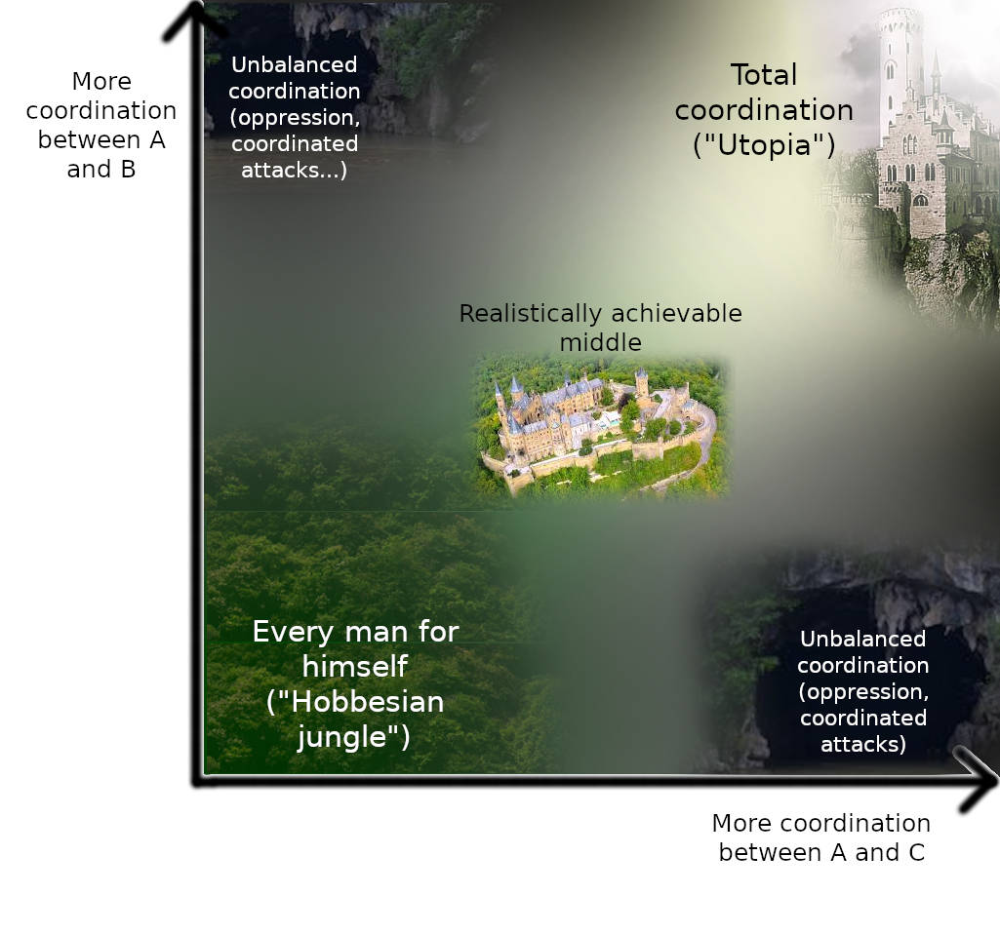

Coordination, Good and Bad
2020 Sep 11
See all posts
Coordination, Good and Bad
Special thanks to Karl Floersch and Jinglan Wang for feedback and
review
See also:
Coordination, the ability for large groups of actors to work together
for their common interest, is one of the most powerful forces in the
universe. It is the difference between a king comfortably ruling a
country as an oppressive dictatorship, and the people coming together
and overthrowing him. It is the difference between the global
temperature going up 3-5'C
and the temperature going up by a much smaller amount if we work
together to stop it. And it is the factor that makes companies,
countries and any social organization larger than a few people possible
at all.
Coordination can be improved in many ways: faster spread of
information, better norms that identify what behaviors are classified as
cheating along with more effective punishments, stronger and more
powerful organizations, tools like smart contracts that allow
interactions with reduced levels of trust, governance technologies
(voting, shares, decision markets...), and much more. And indeed, we as a
species are getting better at all of these things with each passing
decade.
But there is also a very philosophically counterintuitive dark side
to coordination. While it is emphatically true that "everyone
coordinating with everyone" leads to much better outcomes than "every
man for himself", what that does NOT imply is that each individual step
toward more coordination is necessarily beneficial. If
coordination is improved in an unbalanced way, the results can easily be
harmful.
We can think about this visually as a map, though in reality the map
has many billions of "dimensions" rather than two:

The bottom-left corner, "every man for himself", is where we don't
want to be. The top-right corner, total coordination, is ideal, but
likely unachievable. But the landscape in the middle is far from an even
slope up, with many reasonably safe and productive places that it might
be best to settle down in and many deep dark caves to avoid.
Now what are these dangerous forms of partial coordination, where
someone coordinating with some fellow humans but not
others leads to a deep dark hole? It's best to describe them by
giving examples:
- Citizens of a nation valiantly sacrificing themselves for the
greater good of their country in a war.... when that country turns out to
be WW2-era Germany or Japan
- A lobbyist giving a politician a bribe in exchange for that
politician adopting the lobbyist's preferred policies
- Someone selling their vote in an election
- All sellers of a product in a market colluding to raise their prices
at the same time
- Large miners of a blockchain colluding to launch a 51% attack
In all of the above cases, we see a group of people coming together
and cooperating with each other, but to the great detriment of some
group that is outside the circle of coordination, and thus to the net
detriment of the world as a whole. In the first case, it's all the
people that were the victims of the aforementioned nations' aggression
that are outside the circle of coordination and suffer heavily as a
result; in the second and third cases, it's the people affected by the
decisions that the corrupted voter and politician are making, in the
fourth case it's the customers, and in the fifth case it's the
non-participating miners and the blockchain's users. It's not an
individual defecting against the group, it's a group defecting against a
broader group, often the world as a whole.
This type of partial coordination is often called "collusion", but
it's important to note that the range of behaviors that we are talking
about is quite broad. In normal speech, the word "collusion" tends to be
used more often to describe relatively symmetrical relationships, but in
the above cases there are plenty of examples with a strong asymmetric
character. Even extortionate relationships ("vote for my
preferred policies or I'll publicly reveal your affair") are a form of
collusion in this sense. In the rest of this post, we'll use "collusion"
to refer to "undesired coordination" generally.
Evaluate Intentions, Not
Actions (!!)
One important property of especially the milder cases of collusion is
that one cannot determine whether or not an action is part of an
undesired collusion just by looking at the action itself. The reason is
that the actions that a person takes are a combination of that person's
internal knowledge, goals and preferences together with externally
imposed incentives on that person, and so the actions that people take
when colluding, versus the actions that people take on their own
volition (or coordinating in benign ways) often overlap.
For example, consider the case of collusion between sellers (a type
of antitrust
violation). If operating independently, each of three sellers might
set a price for some product between $5 and $10; the differences within
the range reflect difficult-to-see factors such as the seller's internal
costs, their own willingness to work at different wages, supply-chain
issues and the like. But if the sellers collude, they might set a price
between $8 and $13. Once again, the range reflects different
possibilities regarding internal costs and other difficult-to-see
factors. If you see someone selling that product for $8.75, are they
doing something wrong? Without knowing whether or not they coordinated
with other sellers, you can't tell! Making a law that says that selling
that product for more than $8 would be a bad idea; maybe there are
legitimate reasons why prices have to be high at the current time. But
making a law against collusion, and successfully enforcing it, gives the
ideal outcome - you get the $8.75 price if the price has to be that high
to cover sellers' costs, but you don't get that price if the factors
driving prices up naturally are low.
This applies in the bribery and vote selling cases too: it may well
be the case that some people vote for the Orange Party legitimately, but
others vote for the Orange Party because they were paid to. From the
point of view of someone determining the rules for the voting mechanism,
they don't know ahead of time whether the Orange Party is good or bad.
But what they do know is that a vote where people vote based on
their honest internal feelings works reasonably well, but a vote where
voters can freely buy and sell their votes works terribly. This is
because vote selling has a tragedy-of-the-commons: each voter only gains
a small portion of the benefit from voting correctly, but would gain the
full bribe if they vote the way the briber wants, and so the required
bribe to lure each individual voter is far smaller than the bribe that
would actually compensate the population for the costs of whatever
policy the briber wants. Hence, votes where vote selling is permitted
quickly collapse into
plutocracy.
Understanding the Game
Theory
We can zoom further out and look at this from the perspective of game
theory. In the version of game theory that focuses on individual choice
- that is, the version that assumes that each participant makes
decisions independently and that does not allow for the possibility of
groups of agents working as one for their mutual benefit, there are mathematical
proofs that at least one stable Nash equilibrium must exist in any
game. In fact, mechanism designers have a very wide latitude to "engineer"
games to achieve specific outcomes. But in the version of game
theory that allows for the possibility of coalitions working together
(ie. "colluding"), called cooperative game theory, we
can prove that there are large classes of games that do not have any
stable outcome (called a "core"). In
such games, whatever the current state of affairs is, there is always
some coalition that can profitably deviate from it.
One important part of that set of inherently unstable games is
majority games. A majority game is
formally described as a game of agents where any subset of more than
half of them can capture a fixed reward and split it among themselves -
a setup eerily similar to many situations in corporate governance,
politics and many other situations in human life. That is to say, if
there is a situation with some fixed pool of resources and some
currently established mechanism for distributing those resources, and
it's unavoidably possible for 51% of the participants can conspire to
seize control of the resources, no matter what the current configuration
is there is always some conspiracy that can emerge that would be
profitable for the participants. However, that conspiracy would then in
turn be vulnerable to potential new conspiracies, possibly including a
combination of previous conspirators and victims... and so on and so
forth.
|
Round
|
A
|
B
|
C
|
|
1
|
1/3
|
1/3
|
1/3
|
|
2
|
1/2
|
1/2
|
0
|
|
3
|
2/3
|
0
|
1/3
|
|
4
|
0
|
1/3
|
2/3
|
This fact, the instability of majority games under
cooperative game theory, is arguably highly underrated as a simplified
general mathematical model of why there may well be no "end of history"
in politics and no system that proves fully satisfactory; I personally
believe it's much more useful than the more famous Arrow's
theorem, for example.
Note once again that the core dichotomy here is not "individual
versus group"; for a mechanism designer, "individual versus group" is
surprisingly easy to handle. It's "group versus broader group" that
presents the challenge.
Decentralization as
Anti-Collusion
But there is another, brighter and more actionable, conclusion from
this line of thinking: if we want to create mechanisms that are stable,
then we know that one important ingredient in doing so is finding ways
to make it more difficult for collusions, especially large-scale
collusions, to happen and to maintain themselves. In the case of voting,
we have the secret
ballot - a mechanism that ensures that voters have no way to prove
to third parties how they voted, even if they want to prove it (MACI is one project trying
to use cryptography to extend secret-ballot principles to an online
context). This disrupts trust between voters and bribers, heavily
restricting undesired collusions that can happen. In that case of
antitrust and other corporate malfeasance, we often rely on
whistleblowers and even give
them rewards, explicitly incentivizing participants in a harmful
collusion to defect. And in the case of public infrastructure more
broadly, we have that oh-so-important concept:
decentralization.
One naive view of why decentralization is valuable is that it's about
reducing risk from single points of technical failure. In traditional
"enterprise" distributed systems, this is often actually true, but in
many other cases we know that this is not sufficient to explain what's
going on. It's instructive here to look at blockchains. A large mining
pool publicly showing how they have internally distributed their nodes
and network dependencies doesn't do much to calm community members
scared of mining centralization. And pictures like these, showing 90% of
Bitcoin hashpower at the time being capable of showing up to the same
conference panel, do quite a bit to scare people:
But why is this image scary? From a "decentralization as fault
tolerance" view, large miners being able to talk to each other causes no
harm. But if we look at "decentralization" as being the presence of
barriers to harmful collusion, then the picture becomes quite scary,
because it shows that those barriers are not nearly as strong as we
thought. Now, in reality, the barriers are still far from zero; the fact
that those miners can easily perform technical coordination and likely
are all in the same Wechat groups does not, in fact, mean that
Bitcoin is "in practice little better than a centralized company".
So what are the remaining barriers to collusion? Some major ones
include:
- Moral Barriers. In Liars
and Outliers, Bruce Schneier reminds us that many "security
systems" (locks on doors, warning signs reminding people of
punishments...) also serve a moral function, reminding potential
misbehavers that they are about to conduct a serious transgression and
if they want to be a good person they should not do that.
Decentralization arguably serves that function.
- Internal negotiation failure. The individual
companies may start demanding concessions in exchange for participating
in the collusion, and this could lead to negotiation stalling outright
(see "holdout
problems" in economics).
- Counter-coordination. The fact that a system is
decentralized makes it easy for participants not participating in the
collusion to make a fork that strips out the colluding attackers and
continue the system from there. Barriers for users to join the fork are
low, and the intention of decentralization creates moral
pressure in favor of participating in the fork.
- Risk of defection. It still is much harder for five
companies to join together to do something widely considered to be bad
than it is for them to join together for a non-controversial or benign
purpose. The five companies do not know each other too well, so
there is a risk that one of them will refuse to participate and blow the
whistle quickly, and the participants have a hard time judging the risk.
Individual employees within the companies may blow the whistle too.
Taken together, these barriers are substantial indeed - often
substantial enough to stop potential attacks in their tracks, even when
those five companies are simultaneously perfectly capable of quickly
coordinating to do something legitimate. Ethereum blockchain miners, for
example, are perfectly capable of coordinating increases to the gas
limit, but that does not mean that they can so easily collude to
attack the chain.
The blockchain experience shows how designing protocols as
institutionally decentralized architectures, even when it's well-known
ahead of time that the bulk of the activity will be dominated by a few
companies, can often be a very valuable thing. This idea is not limited
to blockchains; it can be applied in other contexts as well (eg. see here
for applications to antitrust).
Forking as
Counter-Coordination
But we cannot always effectively prevent harmful collusions from
taking place. And to handle those cases where a harmful collusion does
take place, it would be nice to make systems that are more robust
against them - more expensive for those colluding, and easier to recover
for the system.
There are two core operating principles that we can use to achieve
this end: (1) supporting counter-coordination and (2)
skin-in-the-game. The idea behind counter-coordination
is this: we know that we cannot design systems to be passively
robust to collusions, in large part because there is an extremely large
number of ways to organize a collusion and there is no passive mechanism
that can detect them, but what we can do is actively respond to
collusions and strike back.
In digital systems such as blockchains (this could also be applied to
more mainstream systems, eg. DNS), a major and crucially important form
of counter-coordination is forking.

If a system gets taken over by a harmful coalition, the dissidents
can come together and create an alternative version of the system, which
has (mostly) the same rules except that it removes the power of the
attacking coalition to control the system. Forking is very easy in an
open-source software context; the main challenge in creating a
successful fork is usually gathering the legitimacy
(game-theoretically viewed as a form of "common
knowledge") needed to get all those who disagree with the main
coalition's direction to follow along with you.
This is not just theory; it has been accomplished successfully, most
notably in the Steem
community's rebellion against a hostile takeover attempt, leading to
a new blockchain called Hive in which the original antagonists have no
power.
Markets and Skin in the Game
Another class of collusion-resistance strategy is the idea of
skin in the game. Skin in the game, in this context,
basically means any mechanism that holds individual contributors in a
decision individually accountable for their contributions. If a group
makes a bad decision, those who approved the decision must suffer more
than those who attempted to dissent. This avoids the "tragedy of the
commons" inherent in voting systems.
Forking is a powerful form of counter-coordination precisely because
it introduces skin in the game. In Hive, the community fork of Steem
that threw off the hostile takeover attempt, the coins that were used to
vote in favor of the hostile takeover were largely deleted in the new
fork. The key individuals who participated in the attack individually
suffered as a result.
Markets are in general very powerful tools precisely
because they maximize skin in the game. Decision
markets (prediction
markets used to guide decisions; also called futarchy)
are an attempt to extend this benefit of markets to organizational
decision-making. That said, decision markets can only solve some
problems; in particular, they cannot tell us what variables we should be
optimizing for in the first place.
Structuring Coordination
This all leads us to an interesting view of what it is that people
building social systems do. One of the goals of building an
effective social system is, in large part, determining the structure
of coordination: which groups of people and in what configurations
can come together to further their group goals, and which groups
cannot?

Different coordination structures, different
outcomes
Sometimes, more coordination is good: it's better when people can
work together to collectively solve their problems. At other times, more
coordination is dangerous: a subset of participants could coordinate to
disenfranchise everyone else. And at still other times, more
coordination is necessary for another reason: to enable the broader
community to "strike back" against a collusion attacking the system.
In all three of those cases, there are different mechanisms that can
be used to achieve these ends. Of course, it is very difficult to
prevent communication outright, and it is very difficult to make
coordination perfect. But there are many options in between that can
nevertheless have powerful effects.
Here are a few possible coordination structuring techniques:
- Technologies and norms that protect privacy
- Technological means that make it difficult to prove how you behaved
(secret ballots, MACI and similar tech)
- Deliberate decentralization, distributing control of some mechanism
to a wide group of people that are known to not be well-coordinated
- Decentralization in physical space, separating out different
functions (or different shares of the same function) to different
locations (eg. see Samo
Burja on connections between urban decentralization and political
decentralization)
- Decentralization between role-based constituencies, separating out
different functions (or different shares of the same function) to
different types of participants (eg. in a blockchain: "core developers",
"miners", "coin holders", "application developers", "users")
- Schelling
points, allowing large groups of people to quickly coordinate around
a single path forward. Complex Schelling points could potentially even
be implemented in code (eg. recovery
from 51% attacks can benefit from this).
- Speaking a common language (or alternatively, splitting control
between multiple constituencies who speak different languages)
- Using per-person voting instead of per-(coin/share) voting to
greatly increase the number of people who would need to collude to
affect a decision
- Encouraging and relying on defectors to alert the public about
upcoming collusions
None of these strategies are perfect, but they can be used in various
contexts with differing levels of success. Additionally, these
techniques can and should be combined with mechanism design that
attempts to make harmful collusions less profitable and more risky to
the extent possible; skin in the game is a very powerful tool in this
regard. Which combination works best ultimately depends on your specific
use case.
Coordination, Good and Bad
2020 Sep 11 See all postsSpecial thanks to Karl Floersch and Jinglan Wang for feedback and review
See also:
Coordination, the ability for large groups of actors to work together for their common interest, is one of the most powerful forces in the universe. It is the difference between a king comfortably ruling a country as an oppressive dictatorship, and the people coming together and overthrowing him. It is the difference between the global temperature going up 3-5'C and the temperature going up by a much smaller amount if we work together to stop it. And it is the factor that makes companies, countries and any social organization larger than a few people possible at all.
Coordination can be improved in many ways: faster spread of information, better norms that identify what behaviors are classified as cheating along with more effective punishments, stronger and more powerful organizations, tools like smart contracts that allow interactions with reduced levels of trust, governance technologies (voting, shares, decision markets...), and much more. And indeed, we as a species are getting better at all of these things with each passing decade.
But there is also a very philosophically counterintuitive dark side to coordination. While it is emphatically true that "everyone coordinating with everyone" leads to much better outcomes than "every man for himself", what that does NOT imply is that each individual step toward more coordination is necessarily beneficial. If coordination is improved in an unbalanced way, the results can easily be harmful.
We can think about this visually as a map, though in reality the map has many billions of "dimensions" rather than two:
The bottom-left corner, "every man for himself", is where we don't want to be. The top-right corner, total coordination, is ideal, but likely unachievable. But the landscape in the middle is far from an even slope up, with many reasonably safe and productive places that it might be best to settle down in and many deep dark caves to avoid.
Now what are these dangerous forms of partial coordination, where someone coordinating with some fellow humans but not others leads to a deep dark hole? It's best to describe them by giving examples:
In all of the above cases, we see a group of people coming together and cooperating with each other, but to the great detriment of some group that is outside the circle of coordination, and thus to the net detriment of the world as a whole. In the first case, it's all the people that were the victims of the aforementioned nations' aggression that are outside the circle of coordination and suffer heavily as a result; in the second and third cases, it's the people affected by the decisions that the corrupted voter and politician are making, in the fourth case it's the customers, and in the fifth case it's the non-participating miners and the blockchain's users. It's not an individual defecting against the group, it's a group defecting against a broader group, often the world as a whole.
This type of partial coordination is often called "collusion", but it's important to note that the range of behaviors that we are talking about is quite broad. In normal speech, the word "collusion" tends to be used more often to describe relatively symmetrical relationships, but in the above cases there are plenty of examples with a strong asymmetric character. Even extortionate relationships ("vote for my preferred policies or I'll publicly reveal your affair") are a form of collusion in this sense. In the rest of this post, we'll use "collusion" to refer to "undesired coordination" generally.
Evaluate Intentions, Not Actions (!!)
One important property of especially the milder cases of collusion is that one cannot determine whether or not an action is part of an undesired collusion just by looking at the action itself. The reason is that the actions that a person takes are a combination of that person's internal knowledge, goals and preferences together with externally imposed incentives on that person, and so the actions that people take when colluding, versus the actions that people take on their own volition (or coordinating in benign ways) often overlap.
For example, consider the case of collusion between sellers (a type of antitrust violation). If operating independently, each of three sellers might set a price for some product between $5 and $10; the differences within the range reflect difficult-to-see factors such as the seller's internal costs, their own willingness to work at different wages, supply-chain issues and the like. But if the sellers collude, they might set a price between $8 and $13. Once again, the range reflects different possibilities regarding internal costs and other difficult-to-see factors. If you see someone selling that product for $8.75, are they doing something wrong? Without knowing whether or not they coordinated with other sellers, you can't tell! Making a law that says that selling that product for more than $8 would be a bad idea; maybe there are legitimate reasons why prices have to be high at the current time. But making a law against collusion, and successfully enforcing it, gives the ideal outcome - you get the $8.75 price if the price has to be that high to cover sellers' costs, but you don't get that price if the factors driving prices up naturally are low.
This applies in the bribery and vote selling cases too: it may well be the case that some people vote for the Orange Party legitimately, but others vote for the Orange Party because they were paid to. From the point of view of someone determining the rules for the voting mechanism, they don't know ahead of time whether the Orange Party is good or bad. But what they do know is that a vote where people vote based on their honest internal feelings works reasonably well, but a vote where voters can freely buy and sell their votes works terribly. This is because vote selling has a tragedy-of-the-commons: each voter only gains a small portion of the benefit from voting correctly, but would gain the full bribe if they vote the way the briber wants, and so the required bribe to lure each individual voter is far smaller than the bribe that would actually compensate the population for the costs of whatever policy the briber wants. Hence, votes where vote selling is permitted quickly collapse into plutocracy.
Understanding the Game Theory
We can zoom further out and look at this from the perspective of game theory. In the version of game theory that focuses on individual choice - that is, the version that assumes that each participant makes decisions independently and that does not allow for the possibility of groups of agents working as one for their mutual benefit, there are mathematical proofs that at least one stable Nash equilibrium must exist in any game. In fact, mechanism designers have a very wide latitude to "engineer" games to achieve specific outcomes. But in the version of game theory that allows for the possibility of coalitions working together (ie. "colluding"), called cooperative game theory, we can prove that there are large classes of games that do not have any stable outcome (called a "core"). In such games, whatever the current state of affairs is, there is always some coalition that can profitably deviate from it.
One important part of that set of inherently unstable games is majority games. A majority game is formally described as a game of agents where any subset of more than half of them can capture a fixed reward and split it among themselves - a setup eerily similar to many situations in corporate governance, politics and many other situations in human life. That is to say, if there is a situation with some fixed pool of resources and some currently established mechanism for distributing those resources, and it's unavoidably possible for 51% of the participants can conspire to seize control of the resources, no matter what the current configuration is there is always some conspiracy that can emerge that would be profitable for the participants. However, that conspiracy would then in turn be vulnerable to potential new conspiracies, possibly including a combination of previous conspirators and victims... and so on and so forth.
This fact, the instability of majority games under cooperative game theory, is arguably highly underrated as a simplified general mathematical model of why there may well be no "end of history" in politics and no system that proves fully satisfactory; I personally believe it's much more useful than the more famous Arrow's theorem, for example.
Note once again that the core dichotomy here is not "individual versus group"; for a mechanism designer, "individual versus group" is surprisingly easy to handle. It's "group versus broader group" that presents the challenge.
Decentralization as Anti-Collusion
But there is another, brighter and more actionable, conclusion from this line of thinking: if we want to create mechanisms that are stable, then we know that one important ingredient in doing so is finding ways to make it more difficult for collusions, especially large-scale collusions, to happen and to maintain themselves. In the case of voting, we have the secret ballot - a mechanism that ensures that voters have no way to prove to third parties how they voted, even if they want to prove it (MACI is one project trying to use cryptography to extend secret-ballot principles to an online context). This disrupts trust between voters and bribers, heavily restricting undesired collusions that can happen. In that case of antitrust and other corporate malfeasance, we often rely on whistleblowers and even give them rewards, explicitly incentivizing participants in a harmful collusion to defect. And in the case of public infrastructure more broadly, we have that oh-so-important concept: decentralization.
One naive view of why decentralization is valuable is that it's about reducing risk from single points of technical failure. In traditional "enterprise" distributed systems, this is often actually true, but in many other cases we know that this is not sufficient to explain what's going on. It's instructive here to look at blockchains. A large mining pool publicly showing how they have internally distributed their nodes and network dependencies doesn't do much to calm community members scared of mining centralization. And pictures like these, showing 90% of Bitcoin hashpower at the time being capable of showing up to the same conference panel, do quite a bit to scare people:
But why is this image scary? From a "decentralization as fault tolerance" view, large miners being able to talk to each other causes no harm. But if we look at "decentralization" as being the presence of barriers to harmful collusion, then the picture becomes quite scary, because it shows that those barriers are not nearly as strong as we thought. Now, in reality, the barriers are still far from zero; the fact that those miners can easily perform technical coordination and likely are all in the same Wechat groups does not, in fact, mean that Bitcoin is "in practice little better than a centralized company".
So what are the remaining barriers to collusion? Some major ones include:
Taken together, these barriers are substantial indeed - often substantial enough to stop potential attacks in their tracks, even when those five companies are simultaneously perfectly capable of quickly coordinating to do something legitimate. Ethereum blockchain miners, for example, are perfectly capable of coordinating increases to the gas limit, but that does not mean that they can so easily collude to attack the chain.
The blockchain experience shows how designing protocols as institutionally decentralized architectures, even when it's well-known ahead of time that the bulk of the activity will be dominated by a few companies, can often be a very valuable thing. This idea is not limited to blockchains; it can be applied in other contexts as well (eg. see here for applications to antitrust).
Forking as Counter-Coordination
But we cannot always effectively prevent harmful collusions from taking place. And to handle those cases where a harmful collusion does take place, it would be nice to make systems that are more robust against them - more expensive for those colluding, and easier to recover for the system.
There are two core operating principles that we can use to achieve this end: (1) supporting counter-coordination and (2) skin-in-the-game. The idea behind counter-coordination is this: we know that we cannot design systems to be passively robust to collusions, in large part because there is an extremely large number of ways to organize a collusion and there is no passive mechanism that can detect them, but what we can do is actively respond to collusions and strike back.
In digital systems such as blockchains (this could also be applied to more mainstream systems, eg. DNS), a major and crucially important form of counter-coordination is forking.
If a system gets taken over by a harmful coalition, the dissidents can come together and create an alternative version of the system, which has (mostly) the same rules except that it removes the power of the attacking coalition to control the system. Forking is very easy in an open-source software context; the main challenge in creating a successful fork is usually gathering the legitimacy (game-theoretically viewed as a form of "common knowledge") needed to get all those who disagree with the main coalition's direction to follow along with you.
This is not just theory; it has been accomplished successfully, most notably in the Steem community's rebellion against a hostile takeover attempt, leading to a new blockchain called Hive in which the original antagonists have no power.
Markets and Skin in the Game
Another class of collusion-resistance strategy is the idea of skin in the game. Skin in the game, in this context, basically means any mechanism that holds individual contributors in a decision individually accountable for their contributions. If a group makes a bad decision, those who approved the decision must suffer more than those who attempted to dissent. This avoids the "tragedy of the commons" inherent in voting systems.
Forking is a powerful form of counter-coordination precisely because it introduces skin in the game. In Hive, the community fork of Steem that threw off the hostile takeover attempt, the coins that were used to vote in favor of the hostile takeover were largely deleted in the new fork. The key individuals who participated in the attack individually suffered as a result.
Markets are in general very powerful tools precisely because they maximize skin in the game. Decision markets (prediction markets used to guide decisions; also called futarchy) are an attempt to extend this benefit of markets to organizational decision-making. That said, decision markets can only solve some problems; in particular, they cannot tell us what variables we should be optimizing for in the first place.
Structuring Coordination
This all leads us to an interesting view of what it is that people building social systems do. One of the goals of building an effective social system is, in large part, determining the structure of coordination: which groups of people and in what configurations can come together to further their group goals, and which groups cannot?
Different coordination structures, different outcomes
Sometimes, more coordination is good: it's better when people can work together to collectively solve their problems. At other times, more coordination is dangerous: a subset of participants could coordinate to disenfranchise everyone else. And at still other times, more coordination is necessary for another reason: to enable the broader community to "strike back" against a collusion attacking the system.
In all three of those cases, there are different mechanisms that can be used to achieve these ends. Of course, it is very difficult to prevent communication outright, and it is very difficult to make coordination perfect. But there are many options in between that can nevertheless have powerful effects.
Here are a few possible coordination structuring techniques:
None of these strategies are perfect, but they can be used in various contexts with differing levels of success. Additionally, these techniques can and should be combined with mechanism design that attempts to make harmful collusions less profitable and more risky to the extent possible; skin in the game is a very powerful tool in this regard. Which combination works best ultimately depends on your specific use case.